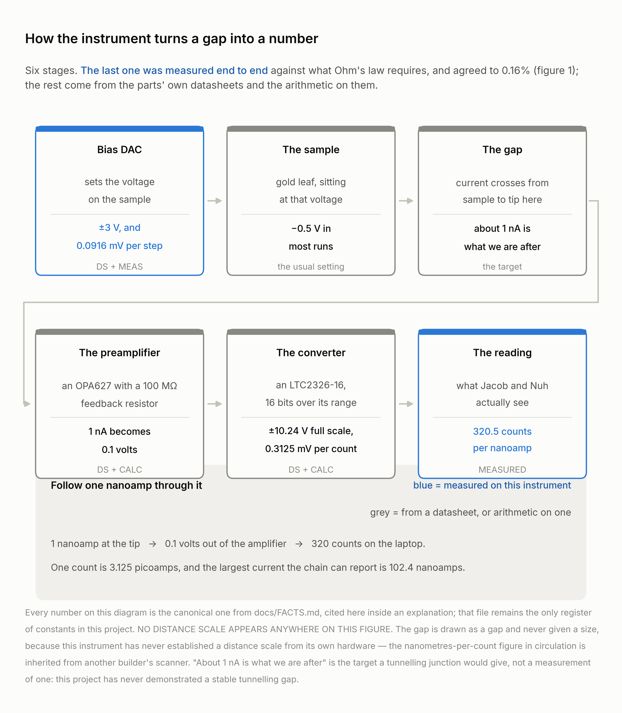
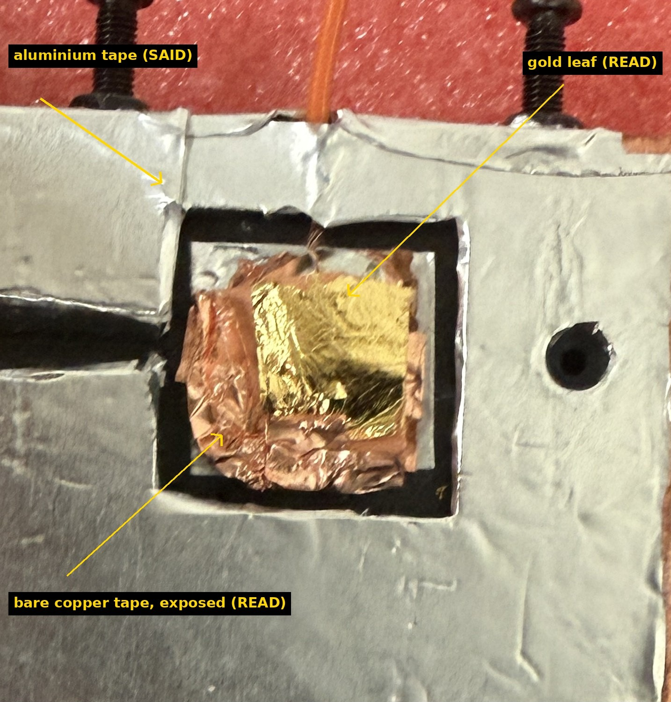

Instrument development · scanning probe microscopy
We built a scanning tunnelling microscope,
and measured exactly what stops it
Every subsystem a tunnelling microscope needs is built, working and calibrated — the amplifier, the converters, the loop, the controls. What is left is mechanical, and we put a number on it.

The team, at the bench, with the instrument. Nuh Shaheer left, Jacob Katz right; identification SAID by Jacob, 2026-09-19, who also gave permission to publish this frame. Images/ours/2026-09-19_team_at_bench_1.jpg (IMG_8633, 2026-09-19 09:38:09 camera-local).
Built in a basement, by two first-year students
No coding experience — neither of us writes code. Very little electronics experience: this project was our first real soldering. It was built and run in the basement of a house people live in, with people moving around and no control of the air. Not a lab, not a clean room. (All stated by Jacob Katz, 2026-09-19.)
This is not a disclaimer, it is the measurement. A tunnelling microscope is normally a clean-room instrument, and the blocker we found — the gap moving by most of the piezo’s range within seconds — is exactly the class of problem those rooms exist to remove. Stated up front, our limit stops being a shortfall and becomes a number for what the environment costs you.
1 Why, and what we set out to do
A scanning tunnelling microscope holds a sharp metal tip about a nanometre above a conducting surface and measures the current — around one billionth of an amp — that crosses the gap. Move the tip, hold that current constant, and the height the instrument needs is a map of the surface. Commercial instruments cost more than a car. Open designs do not. We wanted to find out whether two people with no experience could build one and, more importantly, prove what it was actually doing.
Our objectives, set at the start:
- Build the mechanics, the controller and the amplifier from open designs, and understand every stage rather than treating any of it as a black box.
- Show the analog chain can resolve a nanoamp, and calibrate it against theory rather than against itself.
- Make a real tip-and-sample junction and characterise what it actually is.
- Close a constant-current feedback loop and attempt an image.
- Wherever it fails, find out why with a number rather than an argument — and build the controls that would catch us fooling ourselves.
2 The instrument, and how it turns a gap into a number
A Teensy 4.1 microcontroller drives four 16-bit converters over a 1 MHz serial bus and a 26-way ribbon: X, Y and the sample bias at ±3 V, Z at ±10 V. Their outputs are summed and drive a piezoelectric disc carrying the tip. Tip current goes straight into a transimpedance amplifier with a 100 MΩ feedback resistor, mounted in a copper box as close to the tip as it physically fits, and is read back by a 16-bit converter. Coarse approach is a 28BYJ-48 stepper on a lever. All control and analysis is Python on a laptop over USB. Every stage was brought up and tested on its own before the next one was trusted.

Figure 1. The six stages a current crosses, with the constant each one contributes. Blue marks the two figures measured on this instrument; grey is a datasheet value or arithmetic on one. Built by the figures work of 2026-09-19 from docs/FACTS.md. No distance appears on this diagram — the gap is drawn as a gap and never given a size, because this instrument has never established a distance scale from its own hardware.
3 The apparatus, photographed

The instrument as it stood on the morning it came apart. A printed frame; a top plate on threaded columns; long fine springs down to eyebolts on the circular suspended platform; the copper-taped scan head on a copper-covered base plate; three paper quarter wrappers standing on the platform as added mass. Images/ours/2026-09-19_instrument_full_height.jpg (IMG_8647, 2026-09-19 09:41:02 camera-local). READ, except the coin mass, which is SAID by Jacob.

The window in the sample plate is not all gold. Bright smooth leaf covers roughly the centre and right of the opening; duller crinkled copper tape is exposed to its left and below. The tip lands on gold only if it lands on the gold part. Images/ours/2026-09-18_sample_plate_gold_window_1.jpg (IMG_8619, 2026-09-18 18:08:45 camera-local). READ from the frame.
Acknowledgements and references
This work is self-directed. There is no faculty advisor, no grant and no laboratory behind it. What we owe, we owe to people who published their instruments for free.
- Mech Panda, red-panda-stm — the mechanical design, the controller board and the firmware our build follows.
- Dan Berard, home-built scanning tunnelling microscope — the scan head and the transimpedance preamplifier approach, and the piezo calibration figure we borrow for comparison and have never measured ourselves.
- Our own repository — every session log, raw data file, analysis script and figure behind this poster, including the results we withdrew.
Photographs are our own hardware, taken at our own bench. Each caption is marked SAID (Jacob or Nuh told us) or READ (read off the frame, plausible, unconfirmed). Figures were regenerated from the raw data files for this poster; each carries its own source file and date.
4 The whole chain works end to end — and agrees with theory
We took the tip and the sample out and clipped a known 100 MΩ resistor where the junction would be, then swept the bias across it. That makes the current something Ohm’s law predicts before the run, so the instrument can be checked against a number it had no part in choosing.

Figure 2. Measured −3,204.8 ± 36.5 counts per volt against −3,200 predicted — agreement to 0.13 of one standard error, R² = 0.9934. This fixes the conversion at 320.5 counts per nanoamp and settles the sign of the reading. Source: sessions/2026-09-16-bench.md §3.4, measured 2026-09-16; re-fitted independently from the 53 raw readings for this work. What it does not show: the slope is the ratio of two nominal 100 MΩ resistors whose tolerances were never recorded, so it confirms the scale to within those tolerances rather than independently of them; and the 53 readings are repeats at 8 bias settings, not 53 independent observations.
5 A real junction, with the shape a barrier requires
Getting a current is easy — push the tip into the sample and there is plenty. The hard part is showing you have a barrier, two conductors close enough for electrons to cross rather than simply touching.

Figure 3. Current rose from 0.85 nA at 0.05 V to 31.7 nA at 0.5 V — 3.73 times faster than Ohm’s law, fitting V1.55, with the junction resistance falling from 59 to 16 MΩ. Eight rounds with the polarities interleaved so drift could not manufacture the slope; symmetric to about 10%; confirmed by bias-flip tests on two separate nights. Leakage was excluded separately: tip retracted, bias swept ±2 V, every reading inside 0.06 nA. Source: sessions/2026-09-17-bench.md §3.15, measured 2026-09-17. What it does not show: a barrier is not a vacuum tunnelling gap — a contaminant film, a thin oxide or a dirty near-contact are all superlinear too — and 16–59 MΩ sits at the low end of the range tunnelling occupies. The session log’s “roughly V²” reading is wrong; the refit is V1.55.
What we can claim, and what we cannot
We have not produced an image, and we do not claim one. We searched all 51 recordings this project has made.
We did not confirm a tunnelling current, and we say so. The junction above has the shape a barrier requires. But the test that settles it is how the current changes with distance, and we ran it: a decade of current per ~1,650 to 1,970 Z counts going in, where tunnelling would need about 6 to 13 — two orders of magnitude too shallow — with 705 to 1,868 counts of in-and-out hysteresis in every one of 110 cycles, which is a mechanical signature and does not depend on any scale. Our reading is a soft, pressed, sticky contact. That is a measurement, and it is why we know.
There is no distance scale anywhere on this poster. Every axis is in converter counts. The nanometres-per-count figure used for the comparison above is inherited from another builder’s scanner and has never been measured on ours, so no scale bar appears on any figure.
Numbers inside a run are repeats, not independent samples, and every standard error we print assumes otherwise, so they are optimistic. Where that matters, the independent count is stated beside the claim.
6 We found what stops us, and we measured it
With a junction made, the feedback loop has to hold the gap still while the tip is swept. We stopped the motor, took our hands off, and watched where the surface was.

Figure 4. With the motor off and nobody touching the instrument, the surface the tip was hunting for moved by more than 43,000 Z counts within 6.4 seconds and by more than 56,000 within two minutes — most of the piezo’s whole range — and went out of reach altogether for 105 seconds. A tunnelling current changes ten-fold across about 6–13 counts. Source: sessions/data/2026-09-19-morning/release_watch_run1.log, measured 2026-09-19 12:54–12:56 UTC. The fair question: the fast excursion begins 0.1 s after a 60-step motor retract, so relaxation after that move cannot be excluded for that one event — but the motion reverses and overshoots its own starting point, which relaxation does not do, and the two-minute figure is measured long after any settling transient.
7 The one measurement that still looks like a surface
Every scan we ran, we ran again with the sideways sweep switched off. That X-held control cannot contain surface structure at all, by construction — so anything that shows up in both is the instrument, not the sample. Like for like, on full images, our scans repeat at +0.04 and the controls at +0.07: indistinguishable, and neither differs from zero. That is the test that settles the imaging question, and running it was the right call.

Figure 5. One measurement resists that. Holding the tip at three Y places 12,000 counts apart, passes taken at the same place agreed +0.239 while passes at different places disagreed −0.135 — a difference of +0.374, permutation p = 0.0036. The repeat half an hour later gave +0.056 (p = 0.26), and an X-held control with nothing to see scored p = 0.020 on the same statistic. Across the 201 reproducibility tests run on this data, the honest threshold is p < 2.5 × 10−4. Source: sessions/data/2026-09-19-bench/ycontrol_run2/3/4, measured 2026-09-19. This is not an image and we do not present it as one.
Why we cannot close it, and the experiment that would. The run and its repeat are thirty minutes apart, and in between the gap moved by most of the Z range — so “it did not repeat” and “the surface moved out from under it” cannot be separated with the data that exist. The answer is three repeats with an X-held control interleaved between them, judged against a rule fixed in advance: real only if all three beat all the controls.
Conclusions, and what happens next
Every subsystem a tunnelling microscope needs is built, working and calibrated. The chain resolves picoamps and agrees with theory to 0.13 σ; a real junction was made and characterised; the loop closes; the controls work and have twice killed our own best results. What is left is mechanical, and it is measured rather than mysterious.
Next, in order: reassemble and re-verify after the move; put a box over the instrument and record fifteen minutes of stillness — the free test; a stiffer sample than gold leaf on paper, and a sharper tip; then prove the gap holds within about 200 counts for sixty seconds before scanning anything at all. Until that gate passes, every imaging statistic is dominated by the gap rather than the surface. Two one-line software fixes go in at the same time: discard the first three pixels of every pass, and sweep X back and forth between passes as well as within them.